Photoshop
Texture and image editing
VR Game · Embodied Interaction
A VR exploration game examining fracture recovery, embodied interaction, and emotional experience.
Healing Fragments is a VR rehabilitation experience that integrates physiotherapy movements into symbolic interactions, transforming therapeutic exercises into emotionally meaningful actions. Rooted in traditional Chinese aesthetics, the project creates a calm and supportive immersive environment that offers users emotional comfort through its visual and atmospheric design. Each gesture triggers symbolic feedback—such as an embrace, petals, lantern light, or flowing water—reinforcing the connection between body and emotion, and allowing the rehabilitation process to become both physically engaging and emotionally resonant.
How can VR support both physical rehabilitation and emotional healing during fracture recovery?
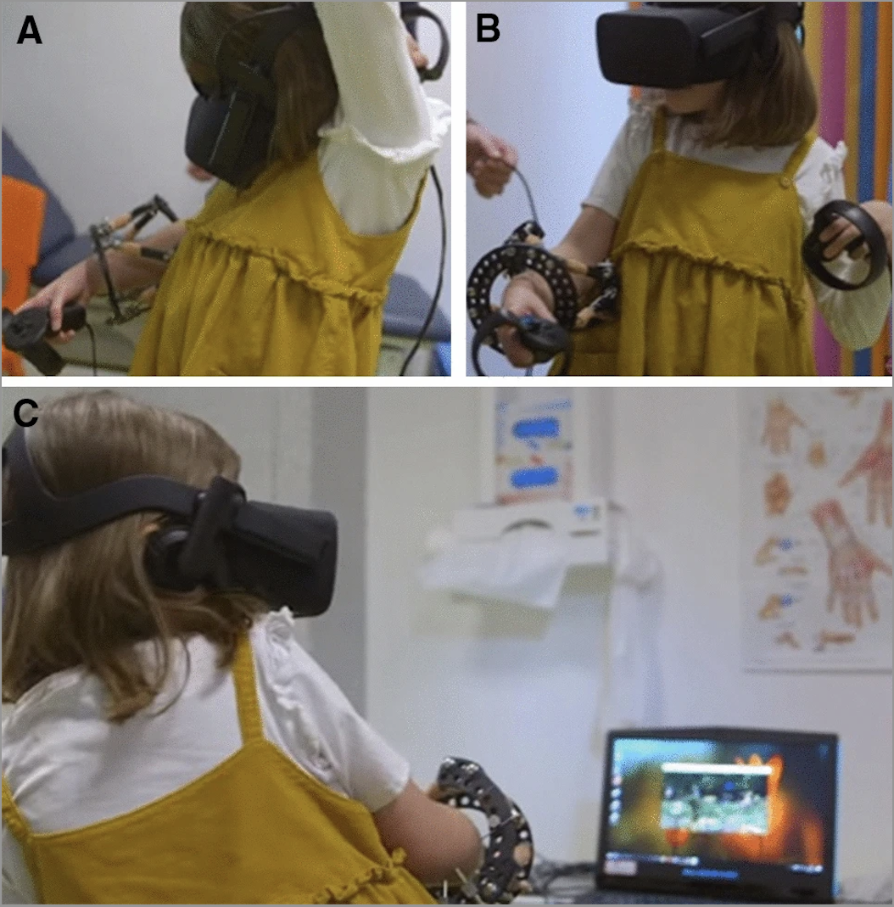
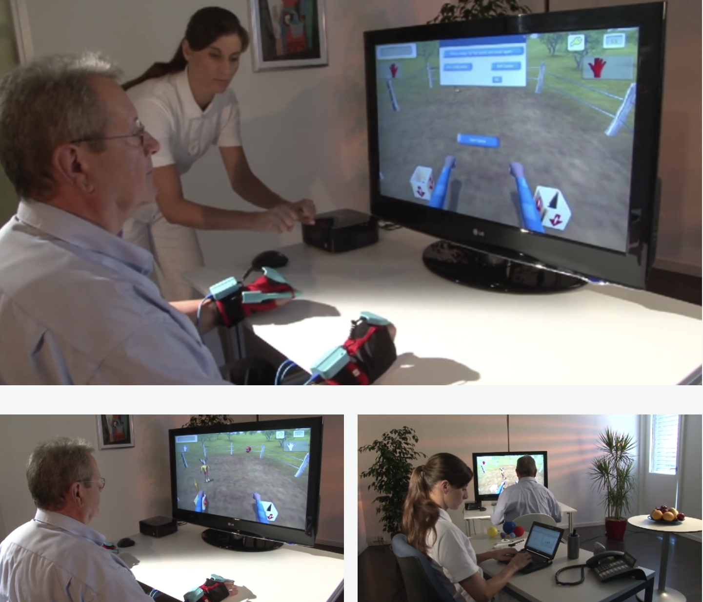
The project was developed using a combination of real-time development, 3D modelling, visual design, and VR technologies.
Texture and image editing
Scene modelling and asset creation
URP, XR Interaction Toolkit, VFX Graph and Particle System
C# scripting and interaction development
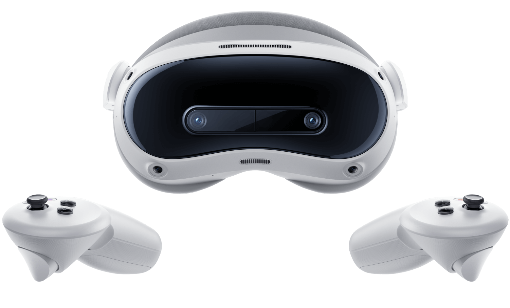
Standalone VR development and testing
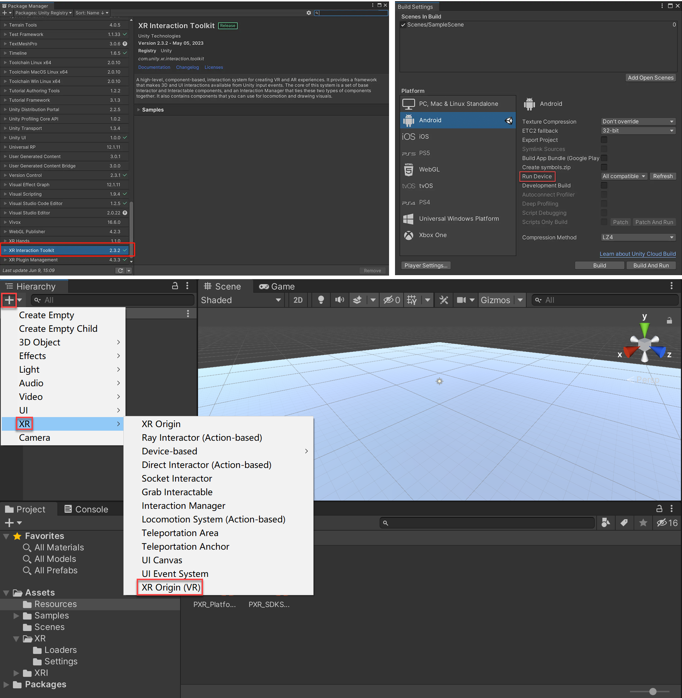
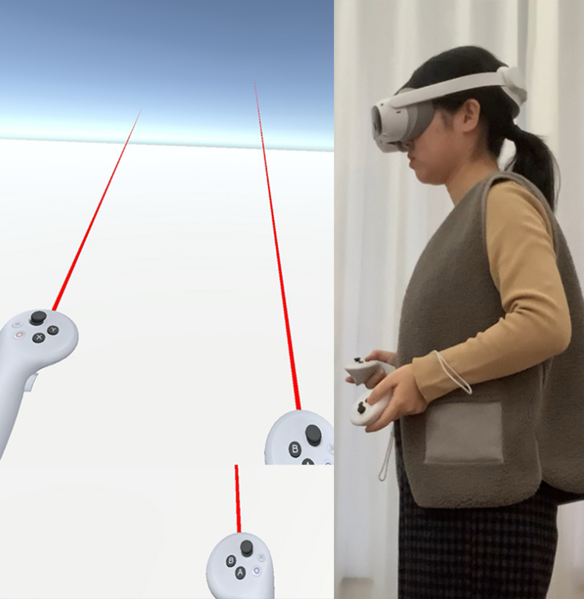
Development Process
Healing Fragments constructs an emotional healing world situated between reality and dream, using Chinese aesthetics and symbolic visuals to transform rehabilitation movements into a poetic and tranquil journey.
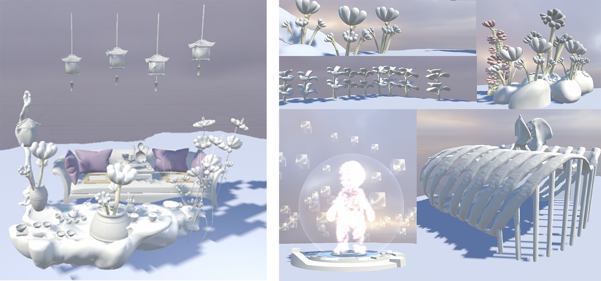
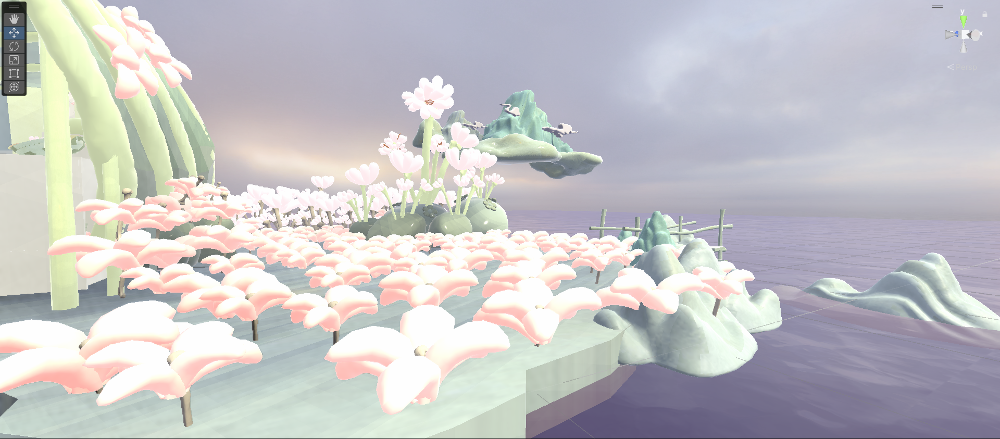
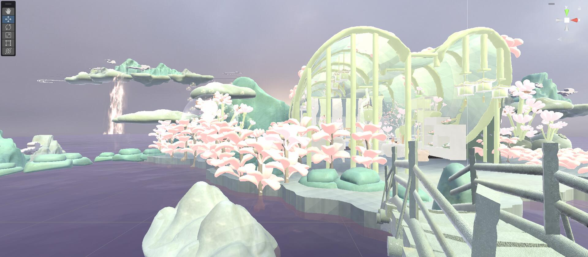
Development Process
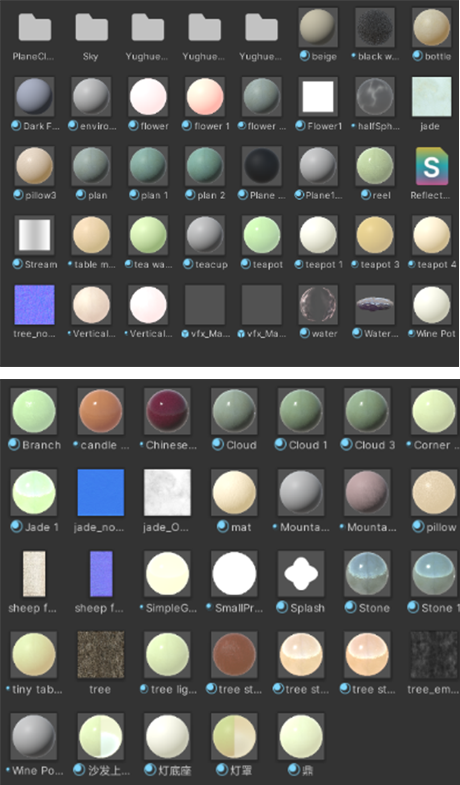
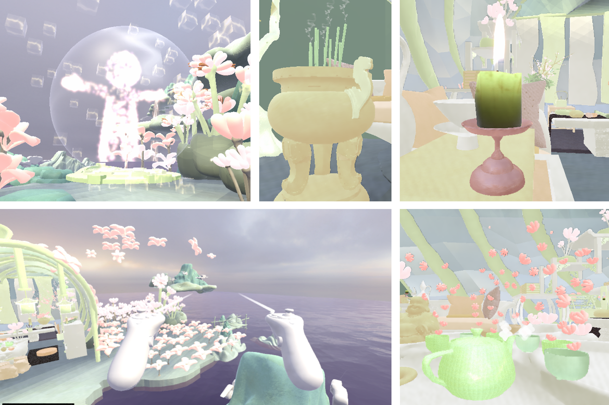
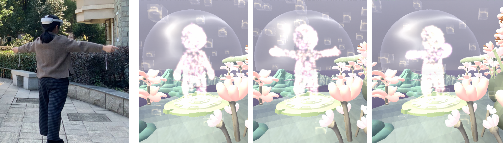
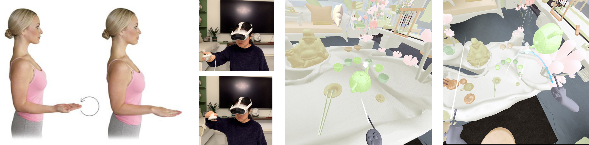
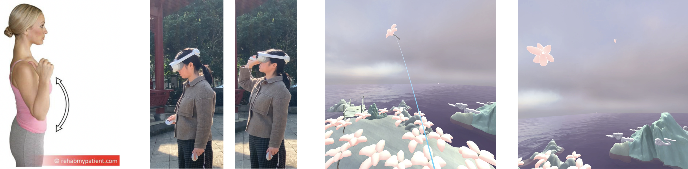
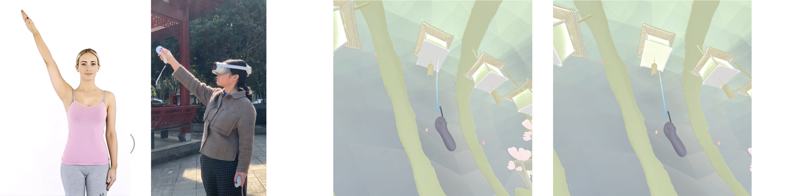
A video walkthrough explaining the concept, interaction design, development process, and intended emotional experience of Healing Fragments.